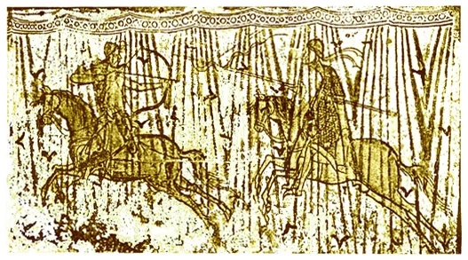
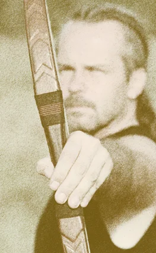
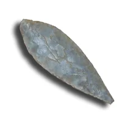

A HAGYOMÁNYOS LÖVÉSTECHNIKA
lássuk, a legszembetűnőbb összetevőt, a szó szoros értelmében vett lövés technikáját. Az azonosításhoz több Kárpát-medencére jellemző (vonatkoztatható) hun, avar-hun, de csak egyetlen magyar harcost ábrázoló alkotás áll rendelkezésünkre. Aquileiából. A képen megfigyelhető a vállak magasságában történő íjkezelés. A nyilvessző, úgy tűnik, a bal kézben tartott fegyver markolatának bal oldalán fut ki. A húzó kéz ujjainak pozíciója nem pontosítható. Mindenesetre nem egyértelműen olyan, mintha a harcos három ujjal feszítené az ideget, kissé furcsa módon talán megmarkolja azt. Az ábrázolt fogás esetleg emlékeztethet a gyűrű használatakor megfigyelhető kéztartásra is.


A hosszú húzáshosszú íjak kifejlesztésével megnövekedett a távolság, amelyen az íj húrja a nyilvesszőt gyorsítja. A nyilvessző kilövése után mérhető helyzeti energiája (E = (v2 m) / 2), függ a saját tömegétől (az íjak összehasonlításakor célszerű azonos paraméterekkel rendelkező lövedékeket, vagy ugyanazt a lövedéket használni, ezért ezt tekinthetjük egységnyinek), a rá ható erő nagyságától (ezt az íj erőssége határozza meg, az íj erősségét pedig az íjász fizikuma - tekintsük ezt is egységnyinek), valamint attól, hogy az erőhatás a lövedéket milyen távolságon, mennyi ideig gyorsítja.
Ez a húzás hosszának lényege. Ezt kihasználva a hosszú húzáshosszú fegyvereket - mint azt megannyi ábrázoláson megfigyelhetjük -, természetesen hosszabb húzástechnikával használták.A hosszú húzáshosszú íjak szemhez, állgödörben támasztott, vagy arc mellé történő húzása tehát azon túlmenően, hogy nem hagyományos technikák, kifejezetten hibás, az eszközhöz nem illő módszerek. Alkalmazásukkal a hosszú húzáshosszú íjak nem is adják le a tőlük elvárható, ideális teljesítményt. Hasonlóképpen, mint amikor egy ötsebességes autót csupán a régi típusoknál megszokott négy, esetleg három sebességfokozatban használnak. A szemhez, állgödörben támasztott, vagy arc mellé húzás egyébként általában a fegyverhez nem illő célzástechnika alkalmazása miatt történik.
Amennyiben a hagyományosnak tekinthető húrfogást próbáljuk meg továbbra is kizárásos alapon azonosítani, a technikákat alapvetően két csoportra oszthatjuk. A hüvelykujjon vezetett, illetve a hosszúujjakon vezetett húrfogásokra. A hüvelykujjal hajlítva vagy *letámasztva lehet az íj húrját megfeszíteni és oldani.

Ez a módszer lehetett a legelterjedtebb a hun, az avar-hun és a magyar lovasok körében, és sok egyéb technikai vívmányhoz hasonlóan (például: bizonyos nyeregtípus, a kengyel és egyéb lovas eszközök) az ő közvetítésükkel került Dél- (mediterrán) és Nyugat-Európába, nem pedig fordítva. Vagy esetleg egy olyan közeli területről, ahol a fegyver alkalmazásának jelentős hagyományai lehettek, a használat közben hosszú időn át felhalmozott tapasztalatok pedig a tökélyre csiszolták az íjásztechnikát. De vajon létezhetett-e ilyen terület?
A Kárpát-medencében a Bükk hegység nyugati oldalán, egészen pontosan Istállóskőn érdekes leletekre bukkantak a szakemberek. Itt nagy számban kerültek elő finoman megmunkált, apró, őskori kova nyilhegyek.A kutatók egybehangzó megállapítása szerint az emberiségnek ezt a nagyszerű találmányát, mármint az íjat, Kr.e. 8000-től ismerik és használják. Az ismert tárgyi emlékek is ezt a feltételezést igazolták mindaddig, amíg az istállóskői nyilhegyek korát meg nem állapították. Azok ugyanis kb. 35 000 évesek! Vagyis a Kárpát-medencében legalább 25 000 évvel korábban használtak íjat, mint bárhol másutt a világon Ha ez valóban így van, logikus lehet a következő kérdésfeltevés. Ha a Kárpát-medencében használtak legkorábban nyilhegyet s ezzel együtt valószínűleg íjat is a világon, ez nem jelentheti-e azt is egyúttal, hogy helyi találmányról beszélhetünk? Egy olyan eszközről és alkalmazásáról, ami nem máshonnan került ide, hanem innen terjedt el talán az egész világon?
Különös tény, hogy a Kárpát-medencei lándzsahegyek is 5-6 ezer évvel idősebbek a világ legrégibb lándzsahegyeinél. Gáboriné Csánk Vera - Az ősember Magyarországon. Gondolat, Bp. 1980.Húzáshossz és az íjász testének fix pontjai
... A húzás hosszát a húzás és a célzás technikája, valamint az íjász testi adottságai határozzák meg. A húzó kéz azonban függetlenül attól, hogy a fentiek milyen húzótávolságot tesznek lehetővé, a vállak vonalában, a vállgödrök között, mindig ugyanaddig a pontig feszíti az íjat. Általában az adott lehetőség által elérhető húzótávolság maximumáig. Az íjász húzókeze feszítéskor érinti a mellkasát. Mindig ugyanazon a ponton. Ettől függőleges irányban sem tér el. Ez a test fix pontja, amely biztosítja, hogy az íj a nyilvesszőt minden lövésnél ugyanakkora energiával - azonos kezdősebességre -gyorsítsa. Természetesen ez csak akkor működik, ha a lövéskor az íj húrja nem akad el az íjász testfelületében vagy öltözékében. A test másik fix pontjaFuttatási irány
A nyilvessző futtatási iránya (bal vagy jobb oldalon) kérdésének tisztázásához szintén nem elég az ábrázolásokra és a régészeti leletekre hagyatkozni. Mélyreható, sokoldalú és alapos gyakorlati ismeretekre, tapasztalatokra is szükség van az azonosításhoz. Enélkül akár azt is gondolhatnánk, hogy bármelyik megoldás elfogadható hagyományos technikának. Jóllehet minden jel a nyilvessző-futtatási irány mindkét lehetőségének jelenlétére utal, mégis nagyban leszűkítik a kört a korabeli fegyverek markolatának maradványain talált, sokmindenről árulkodó kopásnyomok.